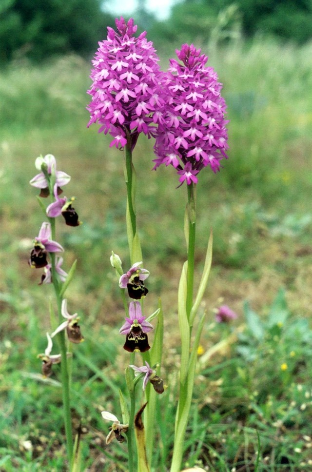
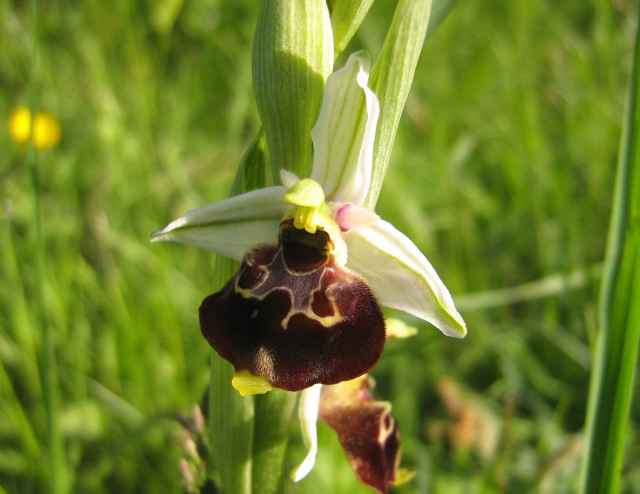

Les pages de JONATHAN
Autres fleurs et lycopodes
Orchis pyramidal,
ANACAMPTIS pyramidalis
(L.) Rich., 1817
et Ophrys bourdon,
OPHRYS fuciflora
(F.W.Schmidt) Moench, 1802
Auxerrois, avril 2008

Pour en savoir plus sur cet
orchis pyramidal
Ophrys bourdon,
OPHRYS fuciflora
(F.W.Schmidt) Moench, 1802

Pour en savoir plus sur cet
ophrys bourdon
▲